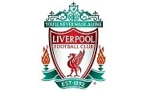

내 나이는 22살이다. 3수하다 망해서 학교를 늦게 들어 오게 됐다. 처음에는 또 열심히 안한걸 후회했지만 지금은 다 항상 대충대충하던 버릇의 결과물이라고 생각해 후회하지않고 있다.
성격은 내성적이다. 가족은 엄마, 아빠, 형, 나 이렇게 4명이다.
좋아 하는 것은 축구보기다. 좋아하는 팀은 리버풀 이고 좋아하는 선수는 메시다. 요즘에는 축구가 코로나 땜에 축구가 안해서 심심하다.
나의 진로 계획은 일단 현재 배우고 있는 포토샵, 자바, 웹프로그래밍, 데이터베이스를 능수하게 다룰 수 있는 수준에 도달하는 것이고 그 다음엔 다른 언어에 대해서도 공부하여 it분야에서 내가 가장 잘할 수 있고 오래일해도 싫증안나는 분야를 찾고 싶다. 가장 중요한 건 돈을 많이 벌고 싶다.
요즘 가장 재밌게 하고 있는 것은 lol이다. 학생 땐 재미없어 보여서 하지 않았었는데 지금은 정말 잘 만든 게임이라고 생각이 든다. 단점은 5 대 5 팀 게임이기 때문에 서로 남탓을 많이 하기 때문에 스트레스도 많이 받는다.
올해부터 현재 노력하고 있는 것은 한달에 두권 책 읽기이다. 전자책을 사서 읽고 있는 데 1, 2월까지는 성공했는데 3, 4, 5월가면서 안 읽게 된다. 지금은 다시 읽고 있다. 지금 읽고 있는 책은 페스트라는 책이다. 설민석씨가 나오는 책 읽어주는 프로그램에서 소개했던 책인데 재밌어보여서 읽고 있다. 지금까지 읽은 책은 봉제인형 살인사건, 신의 아이, 가재가 노래하는 곳, 개구리 남자 연쇄살인마이다. 주로 영미 소설이거나 일본 소설이다. 좀 더 책에 거부감이 사라지면 it관련 책도 읽어보고 싶다.